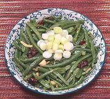

|
Green Beans with GingerChina, Yunnan, Eastern | ||||
| Serves: Effort: Sched: DoAhead: |
4 side ** 40 min Prep |
This vegetable side dish is very easy to make. It is often served in Eastern Yunnan as a foil to very spicy food. The Prep steps are usually done in advance, and can be refrigerated even overnight. | |||
|
1 ----- 3 1/2 3 ----- 2 1/2 |
# --- in cl --- T t |
Green Beans -- Aromatics Chilis, dry (1) Ginger Root Garlic -------------- Oil Salt |
Prep - (30 min - 25 min work)
|